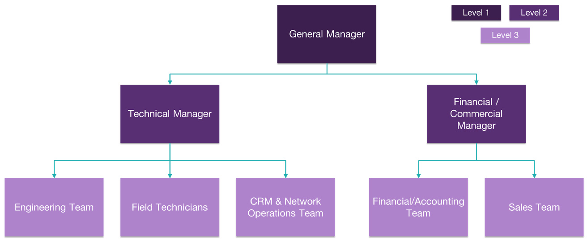

Step 7. Finalize your business plan
Up to this point, you have almost all that you need to render a complete business plan. The objective of this step is to guide you to perform the final steps and integrate everything into a single document.
These final steps consist of defining the operating model, the project plan/schedule, and the financial analysis for your broadband initiative.
Afterwards, instructions on how to use the business plan template are provided.
7.1 Establish your operating model
The operating model of the Tribal broadband organization defines the functional areas that comprise the organization and the organizational structure itself. It also includes the tasks performed by each area and the tasks that are performed by a third-party, or to put it in another way, the tasks that are outsourced.
Table 7.1 shows the set of generic tasks that are usually required for a fixed broadband organization, including applicability for each task, rationale for outsourcing, and the task that the organization would perform if the main task were outsourced.
|
Task |
Applicability |
Rationale for Outsourcing |
Insource task if outsourced |
|
Engineering |
|||
|
Network Architecture Establishment |
Always required |
Outsource if your current team doesn't have a technical background or if you have tight timelines to build the Network |
Establish service requirements and approve architecture |
|
Network high-level design (HLD) |
Always required |
Outsource if your current team lacks networking and computing skills, the timelines to deploy the network are tight, or your Network seems to be large and complex |
Oversee and approve RAN, Backhaul and Core HLD |
|
Network low-level design (LLD) |
Always required |
Outsource unless there is someone already in the team with experience in RAN engineering, MW and satellite link design, and equipment configuration |
Monitor, assess, and approve RAN LLD, Backhaul LLD, IP Plan, and equipment configurations |
|
Vendor Evaluation & Management |
Always required |
Insource unless you're using consulting services |
Engage with consultant to validate technical recommendation, supervise engagement with vendors and validate purchase requests |
|
Civil Engineering / Site Design |
If your Network requires new (greenfield sites) or when existing sites will require structural modifications |
Outsource unless there is someone already in the team with knowledge and expertise in structural analysis and civil engineering |
Scout and select contractors, supervise, and approve site design |
|
Deployment |
|||
|
Deployment Project Management |
Always required |
Outsourcing recommended for large deployments (> 4 sites) |
Monitor progress, supervise PM, provide required resources |
|
Site Survey |
Always required |
Outsource unless your team will be in charge of the low-level designs and site installation |
Coordinate access to sites, monitor progress, validate site survey reports |
|
Site Construction / Civil Works |
If your Network requires new —greenfield sites — or when existing sites will require structural modifications |
Outsource |
Coordinate logistics for civil works and supervise construction |
|
Fiber Construction / Deployment |
If you're deploying last-mile fiber to connect sites |
Outsource |
Coordinate logistics for civil works and supervise fiber deployment |
|
Site Acquisition |
Always required |
Outsourcing recommended for large deployments (> 4 sites) |
Supervise consultant for site acquisition, participate in negotiations |
|
Deployment Inventory Management & Kitting |
If you're planning to store equipment at your own warehouse before deployment or buying equipment from multiple vendors |
Insource |
N/A |
|
Last-mile equipment transportation |
If you're planning to store equipment at your own warehouse before deployment |
Outsource unless your team will perform site installation |
Validate equipment delivery with on-site resources |
|
Network Installation & Commissioning |
Always required |
Outsource unless there is someone already on the team with experience in installation methods, work at height, equipment configuration, and on-site testing |
Monitor progress of I&C tasks. Supervise acceptance testing. Accept and validate ATP reports |
|
IT Hardware Installation & Configuration |
If network systems will be installed on-premise or a virtualized EPC will be implemented on-premise |
Outsource unless there is someone already on the team with experience in server installation, structured cabling, and systems administration |
Supervise and validate IT hardware installation |
|
Systems Installation & Integration |
Always required |
Outsource |
Supervise and validate systems |
|
Operations & Maintenance |
|||
|
Systems Management |
Always required |
Insource |
N/A |
|
Customer Installation |
If you're Network architecture and design, consider outdoor CPEs |
Insource, unless you have identified a local contractor who can offer this service at a suitable price |
Dispatch customer installation, validate installation reports |
|
Service Provisioning |
Always required |
Insource |
N/A |
|
Network Monitoring & Fault Management |
Always required |
Insource unless your Network is less than 20 sites, and you plan to have 24x7 monitoring |
Supervise vendor, define, and monitor SLAs |
|
Advanced Fault Management |
Always required |
Outsource unless you'll have an engineering team with sound knowledge of the solutions to be implemented |
Engage with vendor and provide required access and information. Define and monitor SLAs |
|
Site Access Management & Field Dispatch |
Always required |
Insource |
N/A |
|
Performance Management & Network Optimization |
Always required, level of effort may vary according to the desired quality of service |
Outsource if your Network has more than ten sites |
Define target KPIs, oversee optimization tasks, validate results |
|
Filed Maintenance (Preventive & Corrective) |
Always required |
Insource, unless you have identified a local contractor who can offer this service at a suitable price |
Supervise vendor, validate maintenance reports |
|
Spare Parts Management |
Always required |
Insource |
N/A |
|
CRM (Front desk & troubleshooting) |
Always required |
Insource |
N/A |
|
Commercial / Business Development |
|||
|
RFx Process Management |
Required unless direct purchasing is considered |
Insource may be supported by consulting services |
Engage with consultant and supervise process |
|
Commercial Agreement Management (Site Leasing, Outsourcing, ISP, Systems, etc.) |
Always required |
Insource may be supported by consulting services |
Engage with consultant and participate in negotiations |
|
Purchase Order Processing |
Always required |
Insource |
N/A |
|
Marketing |
It depends on marketing strategy |
Insource |
N/A |
|
Sales |
Always required |
Insource |
N/A |
|
CPE Distribution to POS or technicians |
Always required |
Insource |
N/A |
|
Financial & Legal |
|||
|
Accounting |
Always required |
Insource |
N/A |
|
Payments |
Always required |
Insource |
N/A |
|
Billing |
Required unless free service is provided |
Insource |
N/A |
|
Site Permitting |
Always required |
Insource if there is a legal resource available in your team, insource with outsource support if your Network has up to four sites, outsource if your Network has more than four sites |
Supervise site permitting |
|
Agreement Preparation & Review |
Always required |
Insource if there is a legal resource available in your team |
Review and validate agreement |
|
FCC 477 Filing |
Always required |
Insource |
N/A |
|
General Legal & Regulatory Tasks |
Always required |
Insource if legal resource
available |
Engage with attorney, identify required tasks and coordinate with attorney |
|
Other |
|||
|
Human Resources |
Required unless is a volunteer-only organization |
Insource |
N/A |
|
Administrative Support |
Always required |
Insource |
N/A |
Table 7.1 — Generic tasks for fixed broadband operators.
To define your operating model, analyze Table 7.1 and start listing the tasks under each functional area that will be done by your own organization —insourced — and the tasks for which you will hire a third party — outsourced —.
Once you have a clear view of the tasks, you can develop your organizational structure following one of the charts in Figure 7.1 below.
a)
b)
Figure 7.1 — Baseline organizational charts: a) Small Network, b) Larger Network.
Figure 7.1 a) presents the basic chart for a small network — less than 10 sites —, while Figure 7.1b) presents the chart for a larger network.
As seen from the two charts, the main differences in the structure are 1) whether to include a financial/commercial manager, and 2) the need for an engineering team separated from the operations team.
Once you define and agree with the tribal leadership on the organizational structure, you can estimate the number of resources required for each team. This will depend mainly on the activities to be performed by each resource and the number of sites in the Network. Some guidelines are provided below:
Alternatively, you can start with a minimum of resources and add resources as your Network operations begin to scale.
7.2 Develop a project plan
After defining your operating model, you'll be able to develop a more detailed plan on how the Network will be designed and deployed, including the most important tasks to be performed and the expected timelines for each task.
The project plan should be documented through a Gantt Chart, which is a graphical tool that serves to plan and schedule a project's activities. You can use the Gantt Chart template provided as part of this playbook to customize it and adapt it for your project. Figure 7.2 displays this template.

Figure 7.2 — Gantt Chart template.
The template is divided into two parts: a table describing the tasks and timelines and the actual chart. The chart is automatically updated based on the table data. The following paragraphs provide the necessary guidance to interact with this tool and obtain your own Project Plan.
1) Review and edit tasks that are listed. The template provides a getting started list based on common tasks required for network deployment; however, some of them may not apply to your scenario. The tasks are grouped by stream:
2) Once you have defined the tasks that are required to deploy your Network, provide a start date and end date for each task. Please note that the "Start on Day" and "Duration" columns are calculated automatically based on the provided dates, and you shouldn't edit them. The chart should be updated based on your start and end date inputs.
To further support the template's customization, hints are provided throughout important tasks, as shown in Figure 7.3.

Figure 7.3 — Help notes of the Gantt Chart template.
3) The final step is assigning a task owner or responsible for each task, and your Gantt Chart will be done.
4) Additionally, you may consider keeping updating the template to track progress during the project's actual execution.
7.3 Generate a financial analysis
The business plan, especially if you're requesting a grant from a government entity or funding from a third-party or your tribal authorities, must be supplemented with a financial analysis including projections for the next five years. The financial analysis goal is to support an investment decision, i.e., convince the reader that your Network will be financially stable and successful.
The financial analysis requires network-related inputs and financial inputs. Network-related inputs are the forecasts for revenue, operational expenditures (OPEX), and capital expenditures (CAPEX). Financial inputs may vary based on the depth of the analysis; basic inputs include tax rate, hurdle rate — or discount rate —, and asset life.
Hurdle rate can be thought of as the interest rate that you'd get if you invested your money in another project with equal risk, while asset life is a parameter used to depreciate your assets for tax purposes.
Based on these inputs, the financial analysis provides cash flows and financial metrics such as net present value (NPV) and internal rate of return (IRR).
NPV calculates the profit or loss of your project in "present dollars". This can be seen as the equivalency of the future profits or losses if you obtain them today. Thus, a positive NPV will indicate that your project is profitable, while a negative NPV that it would result in a net loss.
IRR can be thought of as the annual growth rate that the investment in your project is expected to generate.
A Financial Model is provided as part of the playbook to generate your own financial analysis. The summary sheet of this model is shown in Figure 7.4.

Figure 7.4 — Financial Model Summary.
The Financial Model is ready to receive inputs and generate the cash flow, and present value analysis along with the necessary graphics and charts to copy into your business plan.
There are three different ways to use the Financial Model, depending on how much detail you have regarding your Network design:
● Scenario 1 — You only have a rough estimate of CAPEX and OPEX based on RFI or RFP responses from vendors
In this case, you just need to go to the Dashboard sheet and input the monthly rate or average revenue per user (ARPU) and subscriber forecast for each service, as shown in Figure 7.5.
Figure 7.5 — ARPU and subscriber forecast edition.
Then, under Project P&L, edit the OPEX values and under Cash Flow, edit CAPEX values. Both rows are highlighted in Figure 7.6.

Figure 7.6 — Edition of CAPEX and OPEX values.
● Scenario 2 — You have established the Network architecture and a rough estimate of the number of sites through the use of the Network Architecture wizard
To generate your financial analysis, edit details of the architecture at the top of the Dashboard sheet, as shown in Figure 7.7.

Figure 7.7 — Network architecture inputs.
Then, go to the HLD sheet and add a row for each site in your network. Fill each row using the default values suggested in the column title, as shown in Figure 7.8. You just need to make sure to configure the expected covered homes for each site and configure one of the sites with "Yes" under the Core Site column.
Figure 7.8. HLD Sheet with default values.
Automatically, the financial analysis will be generated in the Dashboard sheet.
● Scenario 3 — You have completed the preliminary network design following instructions in step 5.
This scenario requires export data from the HLD template and paste it into the financial model's HLD sheet. In addition, Site configurations must match those from your HLD.
Finally, you can edit costs in the CAPEX and OPEX sheets based on your vendors' data or from the Tech Solutions Matrix.
Detailed instructions for this scenario are provided in the "Instructions" sheet of the template.
7.4 Put your business plan together
At this point of the journey, you should have the following outputs from previous steps:
The final step is to integrate these outputs into the business plan. The business plan serves as the document of record for your broadband initiative. It can also be utilized to get acceptance or request funding for the initiative.
To this extent, you can use the Business Plan template. This template has clear indications on how to edit the document and where to add the elements listed above. Just follow the instructions and you will generate the final deliverable of this Journey.